Importance of Understanding Ranges and using Charts
Preflop charts, while they can do harm if overused, are a great way to play against players you have limited/no information on. This is most players first step towards becoming profitable, and if you are playing micro stakes they will enable you to consistently win. However, it is important to constantly be thinking about other table conditions, along with others perception of yourself, along with the fact ranges change and adapt as stack sizes change. Each chart simply displays what you can open from each position, but is limited due to the fact people may open before you and 3-bet after you.
UTG (Under the Gun)
UTG has the tightest range at the table as they have
8 players left to act behind, increasing the likelihood
of 3-bets. There is no reason to ever expand this
range, and this chart should become ingrained in
your head. Only open these hands, any wider you
will be leaking small amounts of money. Most
people don't play this tight UTG, but it is
counterintuitive not to.
 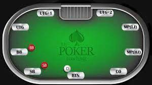
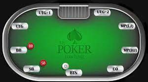
UTG + 1
UTG+1 is similar to UTG in that you should be
following the chart closely no matter what. You
only add a few hands, as 7 people left behind to act
is still a lot.
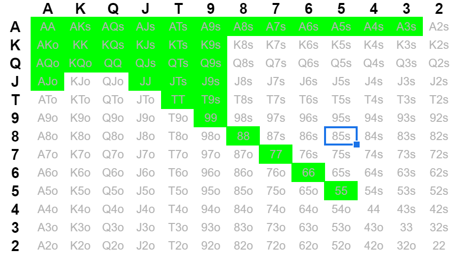
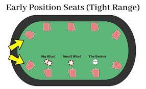
UTG + 2
UTG + 2 you add a few more hands, but no drastic
strategy change. This position is still classed under
EP, and should be played as such.
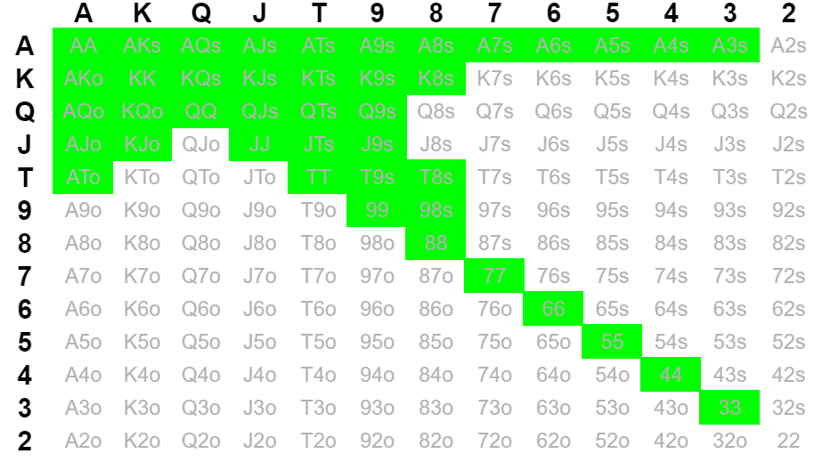
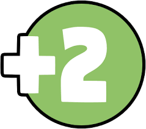
MP (Middle Position)
MP is where you begin to see significant adjustments
to the range and where it becomes more flexible. You
can play more suited connectors, and if the table is
extremely soft you can expand this range even further.
Two of the remaining six players left behind are out
of position of you post-flop, enabling you to peel
more when 3-bet.
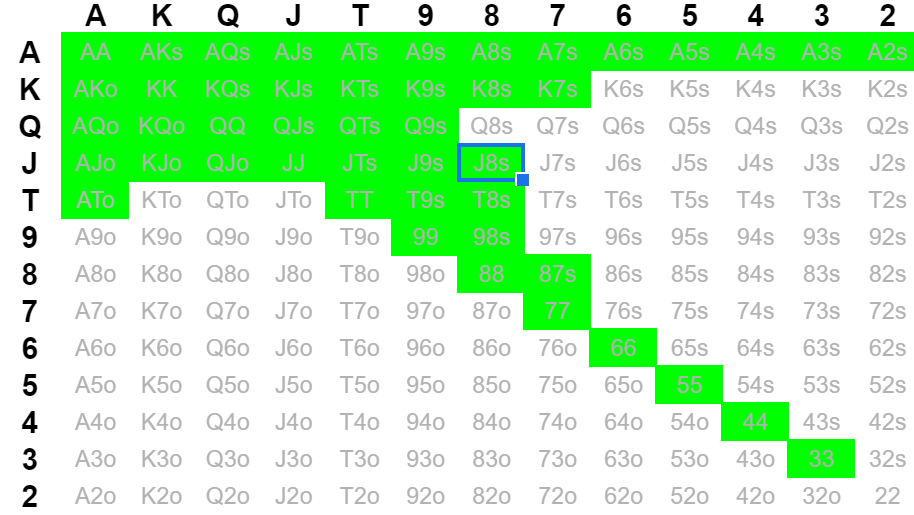
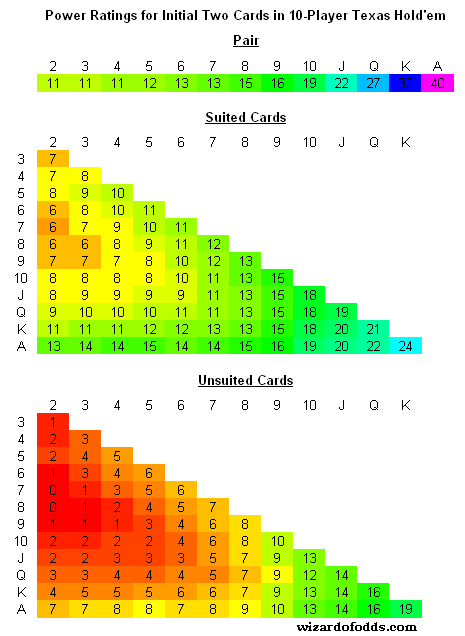
HJ (Hijack)
HJ is still in the MP family, so the strategy from this
position is similar to the last with a few more lower
suited connectors. Almost all suited kings are raises at
this point too, a range I feel most players don't have
adapted to their game.
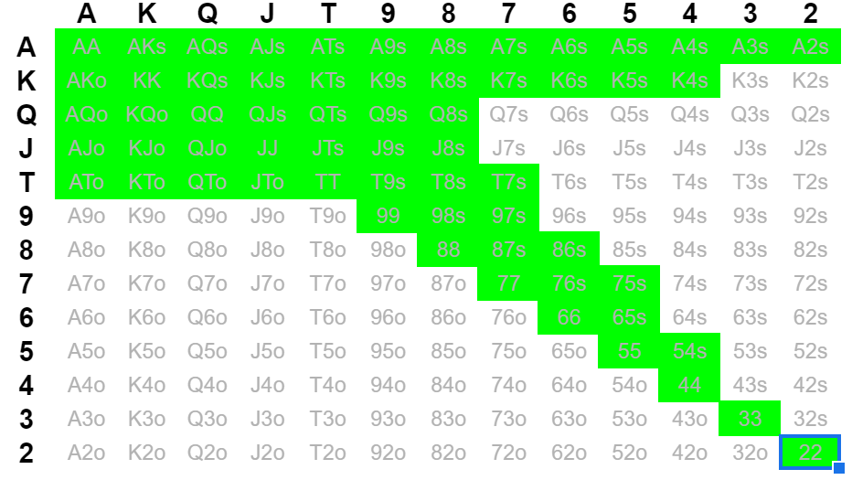

CO (Cutoff)
CO is now in what is considered Late Position, which
is the most advantage position in poker. Unless the
Button plays, you are guarenteed to be playing in
position postflop, and there are only three players
behind who can play back at you. As a result, ranges
expand shockingly wide, and you can play about 50%
of hands profitably.
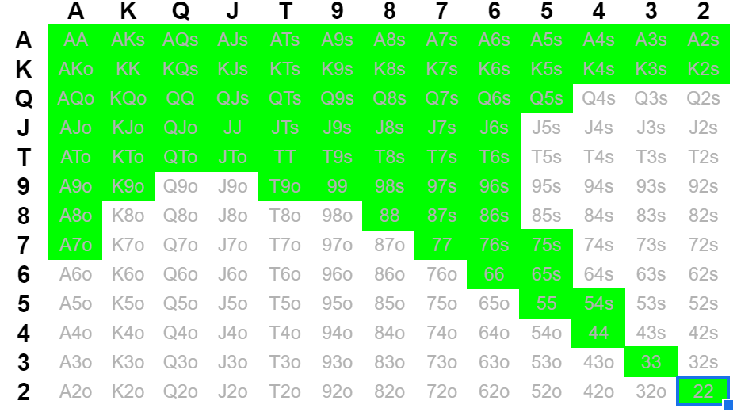
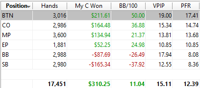
BU (Button)
BU is the best position in the game as no matter what,
you will be in position postflop. Furthermore, you get to
see what the 6 people before you do. Due to this, when
folded to you, your range MUST be extremely wide in
order to capture the dead money in the middle.
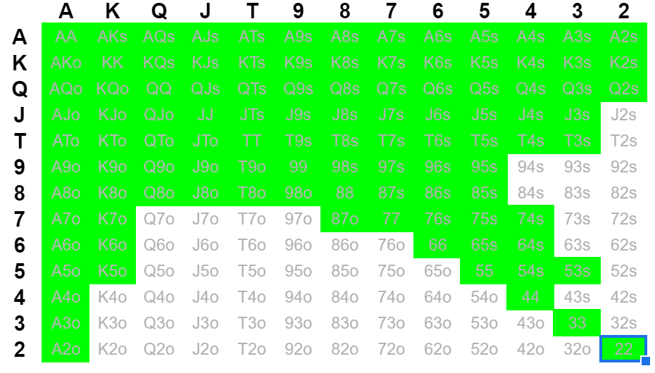
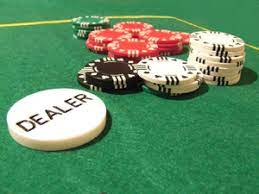
SB (Small Blind)
The most important thing to note about this SB chart, is
that this is the range of hands you want to be playing if
folded to you, not necessarily raising. SB strategy is
much more complex, as you should have limp traps, raise
bluffs, and an overall more intricate strategy. If the hand
is on this chart, then at the very least limp to the BB.
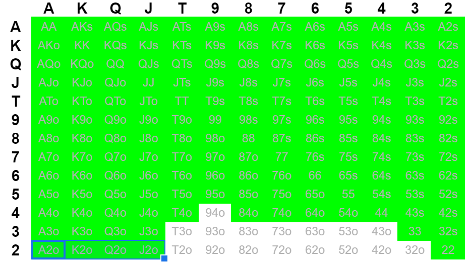
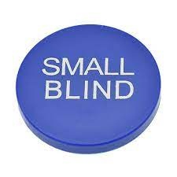